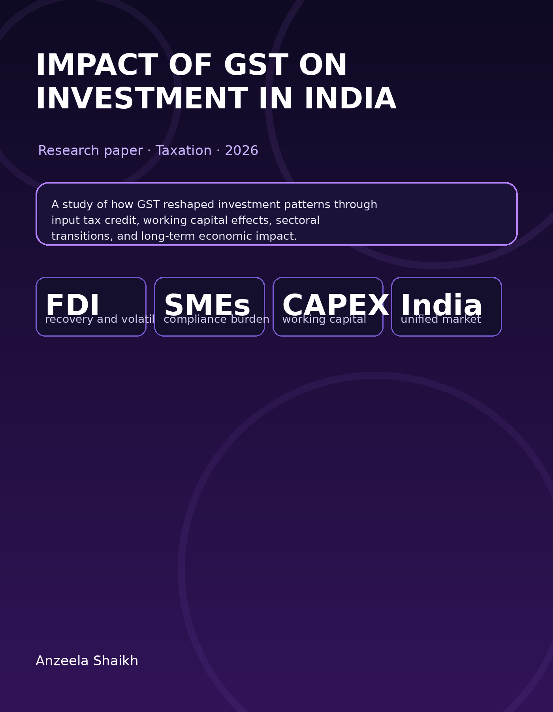

Research Paper · Taxation · 2026
Impact of GST on Investment in India
I examined how GST changed India’s investment climate by looking at the removal of tax cascading, the input tax credit mechanism, FDI trends, manufacturing competitiveness, SME compliance costs, working capital pressures, and the longer-term effect of GST 2.0 reforms.